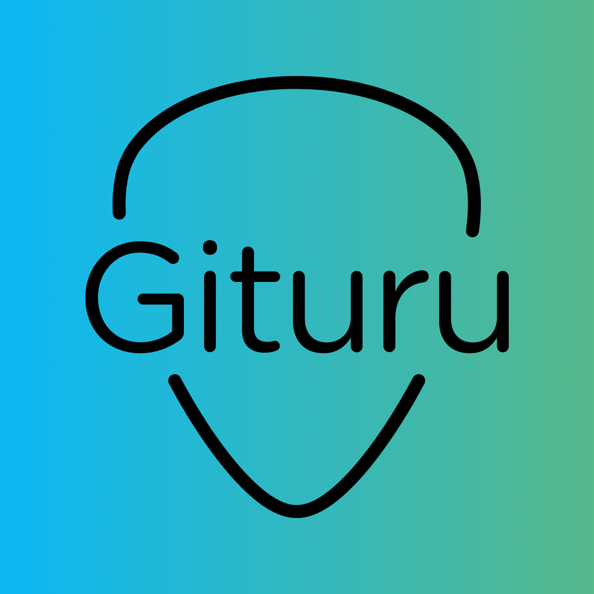
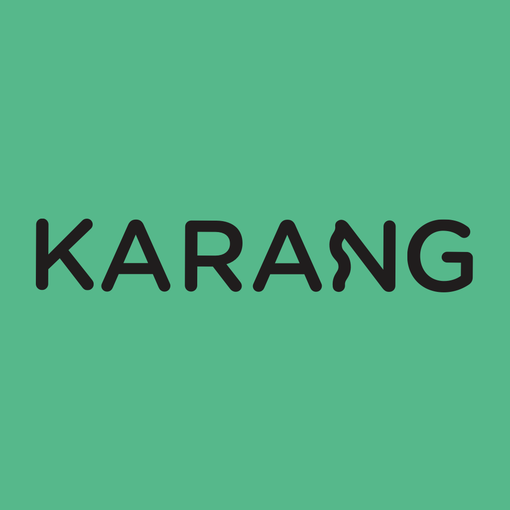
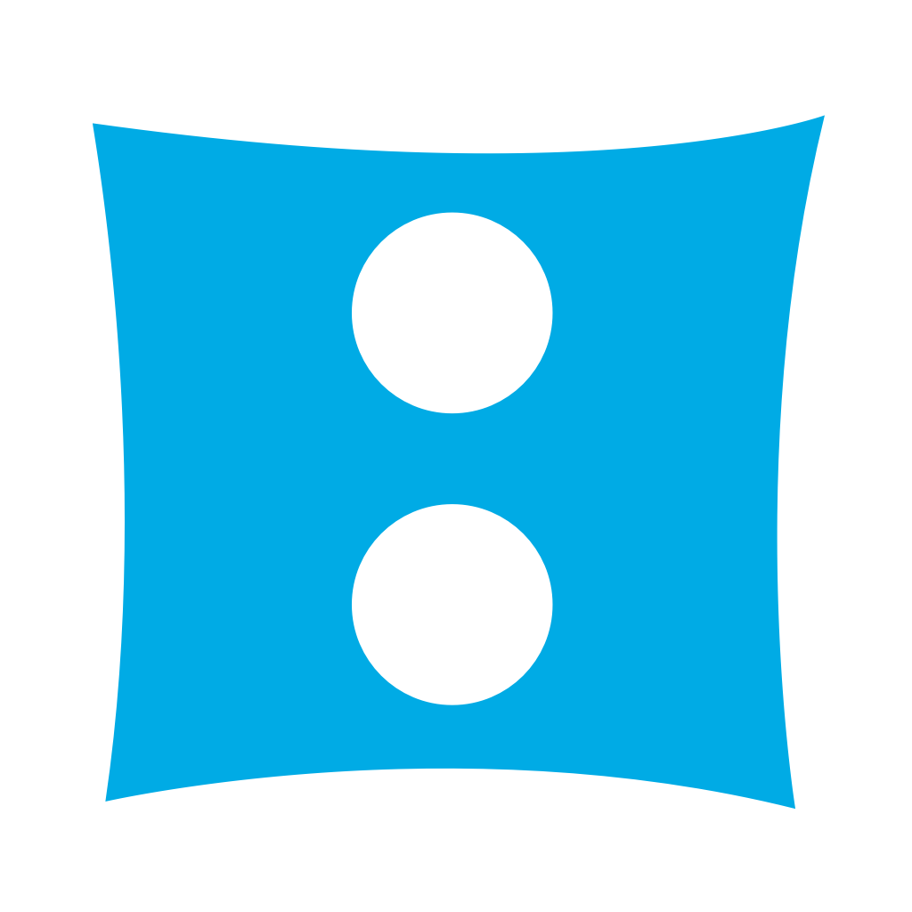
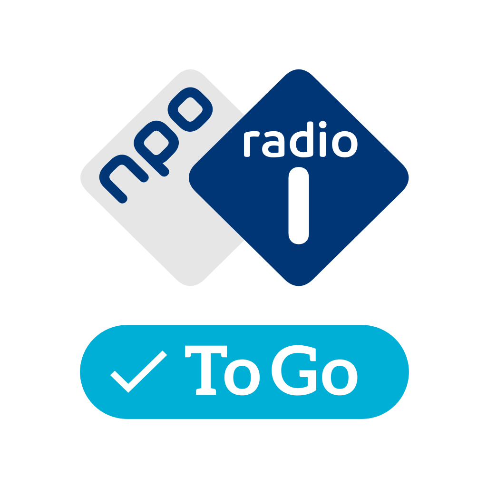
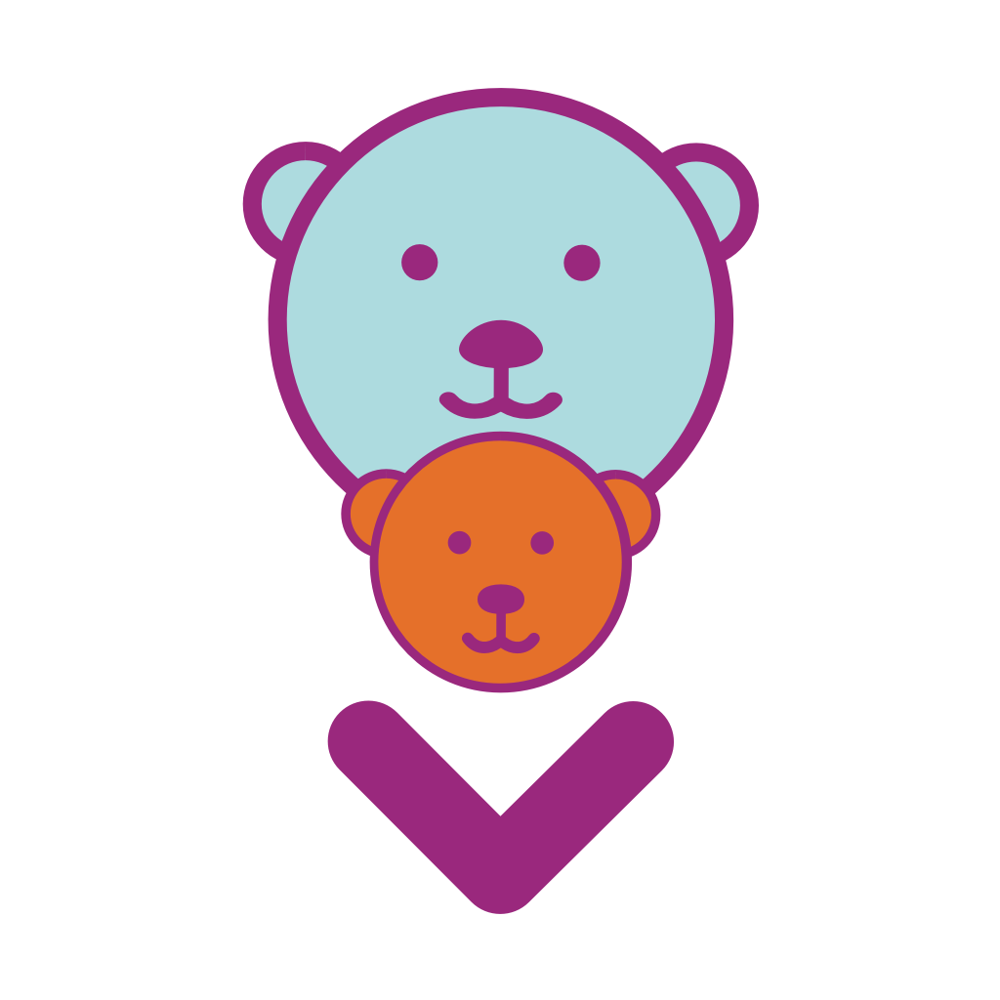

Sjoerd Tieleman
iOS & Ruby development,
app & web consultancy
Wie ben ik?
Ontwikkelaar met jarenlange ervaring aan zowel de achter- als de voorkant. Ik hou van diversiteit en complexe vraagstukken. Ik werk soms solo, maar draai ook graag mee in jouw eigen team. Daarnaast heb ik 8 jaar mede aan het roer gestaan van een software-bedrijf, en heb ik dus ook feeling met de zakelijke kant.
Je kunt me inhuren voor iOS en Ruby development, maar ook als je technisch advies nodig hebt of extra ondersteuning voor je team.
Lees hieronder over de projecten waar ik aan meegeholpen heb of neem contact met me op.
iOS development
Aan deze iOS apps heb ik mee mogen werken. Daarbij heb ik veel ervaring opgedaan over o.a. mediaspelers, audio-detectie en verwerking, locatiebepaling en geavanceerde grafische layouts voor iPad en iPhone.
Ben je bezig met een nieuwe (of bestaande) iOS app waarbij je nog wel wat hulp kunt gebruiken? Wil je een proof-of-concept of een MVP laten bouwen? Laat het me weten, ik denk graag met je mee!
-

Gituru
Chordify
Gituru is jouw nieuwe gitaarleraar. Met behulp van een geavanceerde chatbot worden nieuwe muzikanten aan de hand genomen om hun eerste stappen op het gebied van gitaarspelen te zetten.
Gituru luistert via de microfoon naar het gitaarspel van de gebruiker en geeft daar real-time feedback op door middel van state of the art audio-technologie.
-
Chordify
Chordify
Chordify helpt muzikanten van alle niveau's om mee te spelen met hun favoriete muziek. Chordify geeft je de akkoorden voor ieder nummer en zet ze naast de oorspronkelijke muziek in een gebruiksvriendelijke speler.
Chordify is geschikt voor gitaar, piano en ukulele en biedt verschillende weergave mogelijkheden om de akkoorden synchroon weer te geven met de muziek.
-

Karang
Chordify
Stem alle snaren van je gitaar in één aanslag met Karang, de gratis polyfone tuner app van Chordify. Karang gebruikt geavanceerde audio-algoritmes om snel én nauwkeurig de stemming van alle snaren van je gitaar weer te geven.
-

Schooltv
NTR
Met de Schooltv app kon je duizenden educatieve video's kijken op je iPad of iPhone. Even snel iets opzoeken over aardrijkskunde, de steentijd, rekenen, of gewoon Dokter Corrie terugkijken? Geen probleem! Daarnaast kon je jouw favoriete programma's en onderwerpen instellen om op de hoogte gesteld te worden als er nieuwe video's waren.
De Schooltv app is helaas niet meer beschikbaar in de app store.
-

Radio 1 To Go
NPO Radio 1
Radio 1 To Go was een pilot app voor NPO Radio 1. Luisteraars konden zich abonneren op hun favoriete onderwerpen en kregen zo altijd een verse lijst met relevante fragmenten om te beluisteren. Onderweg, op kantoor, of gewoon thuis. Je eigen persoonlijke podcast, voorzien van een maatwerk audio-speler.
Radio 1 To Go was een tijdelijke pilot en daarom niet beschikbaar in de app store.
-

BoekStart
Stichting Lezen
De BoekStart app staat vol video's en heldere informatie over voorlezen. Ook vind je de nieuwste boeken- en voorleestips voor je baby, dreumes of kleuter in deze app. Verder kan je jouw voorleesmoment met een foto vastleggen en een voorleeswekker instellen die je er op tijd aan herinnert om voor te lezen.
-
Project Wanda
Nedap Healthcare
Project Wanda was een proof-of-concept in opdracht van Nedap Healthcare. Hierbij werd onderzocht of het mogelijk was ouderen met een beginnende vorm van dementie te ondersteunen. Gebruikers van de app werden op vriendelijke wijze naar hun plek van bestemming geleid d.m.v. locatiebepaling en een zeer intuïtieve interface. Op deze manier konden deze gebruikers toch, ondanks hun aandoening, zonder angst om te verdwalen, naar buiten.
Project Wanda was een intern proof-of-concept en daarom niet beschikbaar in de app store.
Web development
Daarnaast heb ik jarenlang aan allerlei verschillende web apps gewerkt. Bijvoorbeeld aan een compleet technisch redesign van NPO Uitzending Gemist (Ruby on Rails), of een mobiele website + API voor NTR Schooltv (Ruby on Rails, zie ook de iOS app hierboven).
Ik heb gewerkt aan video transcoding tools (Node.js), of een MPEG4 parser voor in de browser (JavaScript). Een compleet open-source video transcoding/encoding omgeving voor de European Broadcasting Union (Ruby on Rails, Node.js), maar ook een kiosk-style app voor Lowlands-bezoekers in opdracht van Nedap (HTML, JavaScript).